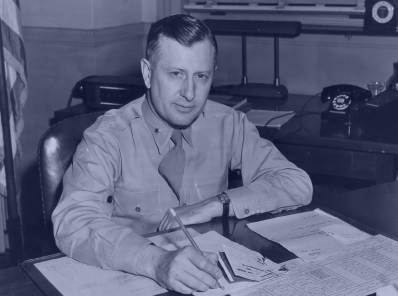

AIRFORCE

AN IMPOSSIBLE MISSION
The greatest airlift in history began with an innocuous phone call. "Could you haul some coal up to Berlin?" asked General Clay to Curtis LeMay. "Sure. We can haul anything", replied the Air Force general. Dubbed as “Operation Vittles” by the Americans, and “Operation Plainfare” by the British, the goal was to supply West Berlin by plane, and it was no small task. In order to feed 2.1 million people, 1,500 tons of food would have to be flown in daily. The Allied forces had to make sure that Berlin’s population could keep warm in the winter and that the city’s factories had the raw materials to keep manufacturing goods.
Pilots flying in the corridors encountered numerous problems; one was the erratic German weather. Weather changed so often that it was not uncommon to leave a base in West Germany under ideal conditions, only to find impossible conditions in Berlin. What made it even more treacherous was the approach to Tempelhof. In order to land there, a pilot had to literally fly between the high rise apartment buildings at the end of the runway so he could land. A second runway required a steep drop over a building in order to land soon enough so there was enough runway for braking. All these conditions plus a fully loaded C-54 with a 10 ton cargo load were more than enough for any pilot to handle, especially during the German winter.

Airport Crew and Technicians
One of the biggest problems during the airlift was the lack of manpower. It was decided to use the very people who the airlift was helping, the Berliners themselves. There was no lack of supply as they were eager to help because it was all for them anyway. In addition those who helped got an extra ration. This was very important to them, as the allotted ration was very small. It also gave the people a great sense of pride that they were helping the effort. So, soon German volunteers were used for unloading crews at Tempelhof. They would board the aircraft as soon as it stopped and commence unloading. If the crews did an especially good job, they might get a reward, such as a pack of cigarettes or an extra ration. This became quite the incentive, as the record for unloading 10-tons of coal was set at 10 minutes.
The Candy Bomber
On his way back to Tempelhof, Gail would always notice children lined up against the fence, watching airplanes taxiing on the tarmac. Feeling for these kids who hadn't tasted sweets in years,  “We can keep on pouring it in for 20 years if we have to.” - General William Tunner USAFhe fished two pieces of bubble gum out of his pocket and gave it to them. Using his co-pilot and flight engineer's candy rations, Gail prepared bundles for the children. "It was heavy, and I thought, Boy, put that in a bundle and hit ’em in the head going 110 miles an hour, it’ll make the wrong impression. So, I made three handkerchief parachutes and tied strings tight around the candy." The operation grew quickly, with a dozen other planes also dropping small packets of candy attached to parachutes. Soon, American children started sending their own candy to help out, and manufacturers offered the pilots as much candy as they could drop.